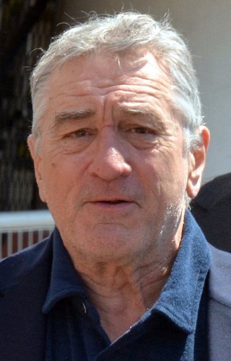

Joaquin Phoenix
Joaquin Phoenix va néixer en una família d'actors. El seu pare és de Califòrnia, mentre que la seva mare va néixer en el Bronx de pares jueus vinguts de Rússia i d'Hongria. Els pares de Joaquin formaven part de la secta dels Nens de Déu, i canviaven de casa freqüentment. Ha viscut a Oregon, a Mèxic, a Amèrica Central i a Florida. Té tres germanes (Rain, Liberty i Summer); el seu germà gran, l'actor River Phoenix, va morir el 1993 d'una sobredosi.
Frances Conroy

Frances Hardman Conroy (Monroe, Georgia, 15 de marzo de 1953) es una actriz de cine y televisión estadounidense. Es mejor conocida por interpretar a Ruth Fisher en la serie de televisión Six Feet Under (2001-2005), por la que ganó un Globo de Oro y tres premios Screen Actors Guild. También es conocida por interpretar la versión más antigua de Moira O'Hara en la primera temporada de la serie de antología televisiva American Horror Story, que le valió a Conroy su primera nominación al Premio Saturn a la Mejor Actriz de Reparto en Televisión, y también al Premio Primetime Emmy por Mejor Actriz de Reparto. Posteriormente, Conroy interpretó a El ángel de la muerte, Myrtle Snow, Gloria Mott, Mama Polk y Bebe Babbitt en seis temporadas más del programa: Asylum, Coven, Freak Show, Roanoke, Cult y Apocalypse, respectivamente. Conroy es el cuarto actor que ha aparecido en la mayoría de las temporadas del programa. Por su actuación en Coven, fue nominada nuevamente para un premio Primetime Emmy a la mejor actriz de reparto.
Robert de Niro

Robert Anthony De Niro (Nueva York, 17 de agosto de 1943), más conocido como Robert De Niro, es un actor, director y productor de cine estadounidense.
Ganador de dos premios Óscar por su actuación en las películas Toro salvaje y El padrino: Parte II. Es ampliamente conocido por sus papeles de gánster y de personajes conflictivos y turbulentos, destacando sus múltiples colaboraciones con el director Martin Scorsese, y por sus primeros trabajos con el director Brian De Palma.123
Durante su carrera ha interpretado a personajes de toda clase de géneros, así como de terror, drama e incluso de comedia. Sus interpretaciones más destacadas se encuentran en cintas como El padrino: Parte II (1974), Taxi Driver (1976), The Deer Hunter (1978), Toro salvaje (1980), Érase una vez en América (1984), Los intocables de Eliot Ness (1987), Goodfellas (1990), Despertares (1990), Cape Fear (1991), Casino (1995), Heat (1995) y El irlandés (2019).
Zazie Beetz
Zazie Olivia Beetz (Berlín, 1 de junio de 1991) es una actriz germano-estadounidense.
Destacó por su papel de Vanessa, en la serie televisiva Atlanta. En el cine, participó en la película de ciencia ficción Geostorm (2017) y posteriormente interpretó a la mercenaria mutante Neena Thurman/Dominó en Deadpool 2 (2018). Participó también, en 2019, en la película Joker realizando el papel de Sophie, junto a Joaquín Phoenix.